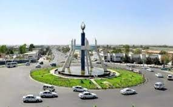
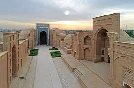

Surxondaryo
Surxondaryo

- O'zbekistonning poytaxti - Toshkent shahri.
- O'zbekistonning 12-ta viloyati bor.
- O'zbekistonning bayrog'i, Gerbi va Madhiyasi bor.
Surxondaryo |
|||||
| Surxondaryo |
Surxondaryo
|
||||
| Toshkent | |||||
| Buxoro | |||||
| Samarqand | |||||
| Navoiy | |||||
| Farg'ona | |||||
| Jizzax | |||||
| Xorazm | |||||
| Namangan | |||||
| Qashqardaryo | |||||
| Sirdaryo | |||||
| O'zbekiston | |||||
| Andijon | |||||
Surxondaryo viloyati Vikipediya, ochiq ensiklopediya Navigatsiya qismiga oʻtishQidirish qismiga oʻtish Surxondaryo viloyati viloyat Maʼmuriy markazi Termiz Yirik shahari Termiz Boshqa yirik shaharlari Denov, Shoʻrchi, Boysun Asos solingan sanasi 1941-yil 6-mart Hokim Maxsudov Murod Rasmiy tili O'zbek Aholi (2020) 2 612 400 (7-oʻrin) Millatlar tarkibi Oʻzbek, tojik, turkman Dinlar tarkibi Islom Maydoni 20,1 ming km2 km² Surxondaryo viloyati xaritada Surxondaryo viloyati, Xarita Soat mintaqasi UTC+5 Kod ISO 3166-2 UZ-SU Avtomobil raqami kodi 75-79 Rasmiy sayti surxondaryo.uz Koordinatalari: 38°0′0″N 67°30′0″E G O Surxondaryo viloyati - Oʻzbekiston Respublikasi tarkibidagi viloyat. 1941-yil 6 martda tashkil etilgan (1925-yil 29-iyundan Surxondaryo okrugi boʻlgan). 1960-yil 25-yanvarda Qashqadaryo viloyati bilan qoʻshilgan. 1964-yil fevralda qaytadan tashkil qilindi. Respublikaning janubisharqida, Surxon-Sherobod vodiysida joylashgan. Viloyat nomi vohadan oqib o'tuvchi "Surxon" (fors-tojik: "qizil") daryosi nomidan kelib chiqqan. Janubidan Amudaryo boʻylab Afgʻoniston, shimoliy, shimoli-sharq va sharqdan Tojikiston, janubi-gʻarbdan Turkmaniston, shim.gʻarbdan Qashqadaryo viloyati bilan chegaradosh. Maydoni 20,1 ming km². Aholisi 2612,4 ming kishi (2019-yil, 1-oktabr holatiga koʻra). Tarkibida 14 tuman (Angor, Bandixon, Boysun, Denov, Jarqoʻrgʻon, Muzrabot, Oltinsoy, Sariosiyo, Termiz, Uzun, Sherobod, Shoʻrchi, Qiziriq, Qumqoʻrgʻon), 8 shahar (Boysun, Denov, Jarqoʻrgʻon, Termiz, Shargʻun, Sherobod, Shoʻrchi, Qumqoʻrgʻon), 114 ta shaharcha, 865 ta qishloq aholi punktlari mavjud (2020). Markazi — Termiz shahri. Mundarija 1 Tabiati 2 Hududiy boʻlinishi 3 Xoʻjaligi 3.1 Sanoat ishlab chiqarish. (yengil va oziq ovqat sanoati), qishloq xoʻjaligi. (paxta va bugʻdoy yetishtirish, qoramolchilik va qoʻychilik), transport (ayniqsa, temir yo'l va avtomobil transporti) salmoqli oʻrin tutadi. 4 Transporti 5 Madaniyat va maorif, sogʻliqni saqlash va sport 5.1 Sogʻliqni saqlash 5.2 Sport 6 Adabiyotlar 7 Matbuot, radioeshittirish va televizioni 8 Meʼmoriy yodgorliklari 9 Adabiyotlar 10 Manbalar 11 Havolalar Tabiati Surxondaryo viloyati relyefi tog va tekisliklardan iborat, shim.dan janubga qiyalanib va kengayib boradi. Togʻlardan oqib tushadigan koʻpdankoʻp daryo va soylar dara hosil qilgan. Surxondaryo va Sheroboddaryo oqib oʻtadigan tekislik shimoliy, gʻarb va sharqdan baland Hisor tizmasi (eng baland joyi 4643 m) va uning tarmoqlari (Boysuntogʻ, Koʻhitangtogʻ, Bobotogʻ) bilan oʻralgan. Yana bir koʻzga koʻringan joylaridan biri Angor tumanidagi Qoraqir qishlogʻidir. Qishloq oʻz polvonlari hamda sabzavotchilik, mevachilik hamda chorvachilikda eng ilgʻor xisoblanadi. Qishloq hamda mahallaning gullab-yashnashiga ulkan xissa qoʻshgan mahalla oqsoqoli Chorshanbiyev Begʻam bobo tumanining koʻzga koʻringan jonkuyarlaridan biridir. Togʻlar, asosan, yuqori paleozoy va mezozoy davrlari jinslaridan, tekislik qismi esa toʻrtlamchi davr yotqiziklardan tarkib topgan. Bu yerda neotektonika jarayonlari davom etmoqda: tevarak atrofdagi togʻlar koʻtarilib, botik, choʻkib bormoqda. Togʻlar bilan tekislik orasida adir va togʻ oldi zonasi joylashgan. Togʻlar shim. sovuq havo oqimlarini toʻsib turishi natijasida subtropik oʻsimliklar oʻstirish uchun qulay iqlim sharoiti vujudga kelgan. Togʻ zonasi va adirlarda, asosan, galla yetishtiriladi, chorva uchun yozgi yaylov. Mutlaq bal. 300–500 m boʻlgan SurxonSherobod tekisligida paxta ekiladi, bogʻ tokzorlar barpo qilingan. Janubiy qismi keng qumliklar bilan qoplangan. Foydali qazilmalardan neft va gaz (Xovdogʻ, Kakaydi, Lalmikor, Amudaryo boʻyi tekisliklari), toshkoʻmir (Shargʻun, Hisor, Boysun, Koʻhitang togʻlarining etaklari), polimetall (Sangardak), osh tuzi (Xoʻjaikon) konlari bor. Gips, granit, argillit kabi qurilish materiallari, mineral suvli buloq koʻp. Tekislik qismining iqlimi quruq subtropik. Yozi jazirama issiq va uzoq, qishi iliq va qisqa. Yillik oʻrtacha temperatura 16°—18°. Iyulning oʻrtacha temperaturasi 28°.—32°, yanvarniki 2,8°—3,6°. Oʻzbekistonda eng issiq temperatura ham shu viloyat hududida kuzatilgan (1914-yil 21-iyunda Termizda 49,5° issiq boʻlgan). Baʼzi yillari qish ancha sovuq (—20° va hatto undan ham past). Yil davomida bulutsiz kunlarning koʻp boʻlishi va quyosh nurining tik tushishi effektiv tralar yigʻindisi yuqori boʻlishiga olib keladi. 10° dan yuqori trali kunlar tekislik qismida 290— 320 kun davom etadi. Bu esa viloyatda eng issiqsevar ekinlar (shakarqamish, ingichka tolali paxta) va mevalar yetishtirishga imkon beradi. Viloyat togʻlar orasidagi berk botikda joylashganidan bu yerda yogʻin kam. Viloyatning jan. tekisliklarida yiliga 130– 140 mm, Hisor togʻlari yon bagʻirlarida 445–625 mm yogʻin yogʻadi. Yogʻinning asosiy qismi qish va bahorda tushadi. Gʻarbiy, janubi-gʻarbiy va shimoli-sharqiy shamollar koʻp esadi. Viloyatning janubi-sharqiy qismida esadigan Afgʻon shamoli iqlimga salbiy taʼsir etadi. Viloyatning asosiy suv arteriyalari — Surxondaryo va Sheroboddaryo hamda ularning Qoratogʻdaryo, Toʻpolondaryo, Sangardakdaryo, Xoʻjaipok kabi irmoqlari. Togʻ qor va muzliklaridan, yogʻindan toʻyinadigan bu daryolar viloyat hududining shim. qismi, togʻ va tog oldi zonalarinigina suv bilan taʼminlay oladi, janubidagi keng tekisliklarda doimiy suv tanqisligi kuzatiladi. Yer osti (artezian) suvlaridan tobora keng foydalanilmoqda. 1957—58 yillarda Uchqizil, 1959— 62 yillarda Janubiy Surxon va Degrez suv omborlari, Jarqoʻrgʻon gidrotuguni qurildi. Hazorbogʻ, Daytoʻlak, Qumqoʻrgʻon, Zang kanallari, Sherobod, AmuZang mashina sugʻorish kanallari barpo etildi. Tuprogʻi tekisliklarda taqirsimon va shoʻrxok och boʻz tuproklar, togʻ yon bagʻrida turli xil boʻz tuprokdar. Oʻsimliklar dunyosi ham tabiiy sharoiti bilan bogʻliq. Janubidagi ekin ekilmaydigan qumloq joylarda qandim, oq saksovul, cherkez, taroqbosh, yaltirbosh, yantoq, butasimonlar; daryo boʻylarida yulgʻun, jiyda, turangʻil, terak, savagʻich, qiyoq, qamish; adir va togʻlarning pastki yon bagʻirlarida bir yillik efemerlar (lolaqizgʻaldoq, nixatak); 1200–2500 m balandliklarida efemerlar bilan birga archa, pista, qayin, tol, yongoq, olma, zarang oʻrmonlari uchraydi. Bobotogʻ tizmasi yon bagʻirlarida respublikaning eng yirik tabiiy pistazorlari joylashgan. Baland togʻ zonasi subalp va alp oʻtloklari bilan band. Hayvonot dunyosi ancha boy: buri, tulki, chiyaboʻri, ayiq, jayran, qobon, yovvoyi echki, arhar, toʻqaylarda bugʻu, toʻqay mushugi, kalamush, qoʻshoyoq, yumronqoziq, koʻrsichqon, gekkon kaltakesagi, koʻzoynakli ilon (kobra), oʻq ilon, jayra, qushlardan ular (togʻ kurkasi), qirgʻovul, mayna, qaldirgʻoch, gʻoz, oʻrdak, soʻfitoʻrgʻay, chil, kaklik bor. Daryo va suv omborlarida har xil baliq koʻp.
Surxondaryo viloyati hududida Surxon davlat qoʻriqxonasi joylashgan. Hududiy boʻlinishi Surxondaryo districts.png Tuman nomi Tuman markazi 1 Angor tumani Angor (shahar) 2 Boysun tumani Boysun 3 Denov tumani Denov 4 Jarqoʻrgʻon tumani Jarqoʻrgʻon (shahar) 5 Qiziriq tumani Sariq (shaharcha) 6 Qumqoʻrgʻon tumani Qumqoʻrgʻon 7 Muzrabot tumani Xalqobod (Muzrabot tumani) 8 Oltinsoy tumani Qarluq 9 Sariosiyo tumani Sariosiyo (shaharcha) 10 Sherobod tumani Sherobod 11 Shoʻrchi tumani Shoʻrchi 12 Termiz tumani Termiz 13 Uzun tumani Uzun 14 Bandixon tumani Bandixon Aholisi, asosan, oʻzbeklar (78%), shuningdek, tojik, rus, turkman, qozoq va boshqa millat vakillari ham yashaydi (2004). Aholining oʻrtacha zichligi 1 km²ga 130,0 kishi. Shahar aholisi 923,4 ming kishi, qishloq aholisi 1689,0 ming kishi (2019). Xoʻjaligi Yaqin oʻtmishda viloyat iqtisodiyotida qishloq xoʻjaligi. yetakchi mavqeda edi. Keyingi davrda yangi tarmoqlar vujudga keldi. Viloyatning tabiiy geografik oʻrni qulay, mehnat resurslari ham yetarli. Sanoat ishlab chiqarish. (yengil va oziq ovqat sanoati), qishloq xoʻjaligi. (paxta va bugʻdoy yetishtirish, qoramolchilik va qoʻychilik), transport (ayniqsa, temir yo'l va avtomobil transporti) salmoqli oʻrin tutadi. Sanoatining yetakchi tarmoqlari: paxta tozalash, paxtani qayta ishlash korxonalaridir. Yirik sanoat korxonalari: "Jarqoʻrgʻonneft" boshqarmasi, Sherobod keramika badiiy buyumlar, Denov yogʻekstraksiya, Sariosiyo tosh saralash zavodlari, Shoʻrchi un kombinati, Jarqoʻrgʻon yigiruvtoʻquv, Termiz tikuvchilik fabrikalari, Shargʻun koʻmir, Xoʻjaikon tuz konlari korxonalari va boshqa Surxondaryo viloyatida 40 ga yaqin qoʻshma, 4000 dan ziyod kichik va xususiy korxona ishlab turibdi. Jumladan, Afgʻoniston bilan hamkorlikda tashkil etilgan xalq isteʼmoli mollari ishlab chikariladigan "Namaf" va "Afroʻz", "Surxonteks" va boshqa qoʻshma korxonalari faoliyat koʻrsatmoqda. Hindiston — Termiz "Farmed" qoʻshma korxonasida mahalliy giyohlar asosida doridarmon, Turkiya— Termiz "Poʻlat" qoʻshma korxonasida milliy gilamlar, paloslar tayyorlanadi. Tumanlarda qishloq xoʻjaligi. mahsulotlari qayta ishlanadigan kichik korxonalar, sexlar tashkil etilmoqda. Qishloq xoʻjaligining asosiy tarmoqlari: paxtachilik, gʻallachilik, bogʻdorchilik, pillachilik, limonchilik. Togʻ etaklarida lalmikor dehqonchilik (asosan, bugʻdoy va arpa) bilan shugʻullaniladi. Oʻzbekistonda eng koʻp ingichka tolali paxta Surxondaryo viloyatida tayyorlanadi. Viloyatning togʻoldi tumanlarida bogʻdorchilik va tokchilik rivojlangan. Chorvachilikda qoramol, qoʻy (qorakoʻl va hisor qoʻylari), echki, yilqi, parranda, quyon boqiladi. Jahon moʻyna va teri auksionlarida juda qadrlanadigan "Surxon suri" qorakoʻl terisi yetishtiriladi. Dehqonchilikda foydalanadigan yerlar maydoni 284,3 ming ga, shundan sugʻoriladigan yerlar 271,6 ming ga, shu jumladan, 120,8 ming ga yerga paxta, 129,7 ming ga yerga don ekinlari, 9,1 ming ga yerga sabzavot, 1,8 ming ga yerga poliz, 5,5 ming ga yerga kartoshka, 16,2 ming ga yerga yem-xashak ekinlari ekiladi. 33,5 ming ga yer koʻp yillik daraxtzorlar, 12,7 ming ga yer mevazor, 5,2 ming ga yer tutzor, 15,1 ming ga yer tokzorlar bilan band. 854,2 ming ga yerni yaylovlar egallagan. Yerning meliorativ holatini yaxshilash maqsadida kollektordrenaj tarmoklari qurilgan. Viloyatda 151 shirkat, 4715 fermer xoʻjaliklari bor. Viloyat jamoa va shaxsiy xoʻjaliklarida 487,2 ming qoramol (shu jumladan, 227,7 ming sigir), 1042,0 ming qoʻy va echki, 1052,5 ming parranda, 12,2 ming ot boqiladi (2004). Transporti Viloyatda temir yo'l transportining salmogi katta. Surxondaryoda dastlabki temir yo' 1915-yilda (Kogon— Termiz) qurilgan. Bu viloyatni boshqa regionlar bilan bogʻlaydigan dastlabki muhim yoʻl boʻldi. 1925-yilda 248 km li Termiz—Dushanba temir yo'lni qurishga kirishildi. Bu yoʻlning qurilishi Termizni Oʻrta Osiyoning yirik shaharlari — Toshkent va Dushanba bilan bogʻladi. 1971-yilga kelib Surxondaryo viloyatini Tojikistonning jan. tumanlari bilan bogʻlovchi Termiz—Qoʻrgʻontepa — Yavan temir yo'ini qurishga kirishildi. Gʻuzor — Boysun — Qumqoʻrgʻon temir yoʻlning qurilishi yakunlanmoqsa. Amudaryo ustidan Hayraton temir yo' koʻprigi qurilgan. Viloyat hududidan Moskva — Dushanba, Ashxobod — Dushanba temir yo'llari oʻtgan. Termiz — Toshkent, Termiz — AmuZang, Termiz — Sariosiyo, Termiz — Boldir yoʻnalishlarida poyezdlar kdtnaydi. Shuningdek, Termiz orkali Dushanba — Astraxon, Dushanba — Konibodom, Qoʻrgʻontepa — Konibodom, Koʻlob — Astraxon yoʻnalishlarida poyezdlar qatnaydi. Viloyatdagi temir yoʻllarning uz. 300 km. Viloyatning ichki transport aloqalarida avtomobil yoʻlining ahamiyati juda muhim. Surxondaryo viloyatidagi qattiq qoplamali avtomobil yoʻllarning uz. 2,7 ming km. Viloyatning asosiy avtomobil yoʻli —Katta Oʻzbekiston traktoʻ. Avtomobilda mamlakatlararo yuk tashish xizmati korxonasi yuklarni qoʻshni Afgʻonistonga yetkazib bermoqda. Surxondaryo viloyatining yirik shaharlari (Termiz va Denov)dan bir qancha xorijiy mamlakatlar va Oʻzbekistonning ichki tumanlariga avtomobil transporti qatnaydi. Termiz — Qarshi, Termiz — Hayraton (Afgʻoniston), Termiz — Dushanba, Termiz — Toshkent, Denov — Qarshi, Denov — Shahrisabz, Denov — Gʻuzor, Denov — Urganch, Denov — Samarqand yoʻnalishlari shular jumlasidan. Surxondaryo viloyatida respublikada yagona boʻlgan Termiz dare porti joylashgan. Termiz va Sariosiyoda aeroport bor. Termiz aeroportidan Toshkent, Moskva, Ashxobod, Olmaota, Samarqand, Namangan, Buxoro, Andijon va boshqa yoʻnalishlarda yoʻlovchilar tashuvchi samolyotlar qatnovi yoʻlga qoʻyilgan. Madaniyat va maorif, sogʻliqni saqlash va sport Surxondaryo vodiysi ilk ibtidoiy odamzod makon topgan joy sifatida taʼriflanadi. Boysun tizmalaridan oʻrta paleolit davriga (mil. av. 100— 40 ming y.liklarga) oid ibtidoiy odam manzillarining qoldiklari topilgan. Surxondaryo togʻlarida tosh davrining soʻnggi bosqichi—yuqori paleolitga (mil. av. 40—12 ming yilliklar) doir topilma ham kup. Shulardan biri Teshiktosh unguridan qazib olingan 8—9 yashar bola suyaklaridir (antropolog M.M. Gerasimov tomonidan qiyofasi tiklangan). Ushbu topilma "neandertal odam" nomi bilan mashhur boʻlib Oʻzbekistonning, umuman, Oʻrta Osiyoning hozirgi zamon odami (kromanon) shakllangan mintaqaga taallukli ekanini isbotlashga dalil boʻldi. Vohada qad. madaniyatga mansub Ayritom, Dalvarzintepa, Xolchayon, undan keyingi davrlarga oid Sopomitepa, Mirshodi, Moʻlali, Kampirtepa, Jarqoʻrgʻon, Bolaliktepa va boshqa arxeologik yodgorliklar topilib oʻrganildi. Koʻhitang togʻlarida aniqlangan Zarautsoy qoyatosh rasmlari mezolit yoki neolit davriga tegishli. Zarautsoydagi gʻor shiftlari va devorlarida oxra boʻyogʻi yordamida rayem chizilgan. Rasmlarning asosiy qismi yovvoyi buqalarni sehrjodu yoʻli bilan ovlash manzarasini aks ettiradi. Mil. av. 2ming yillikning 1-yarmida hozirgi Oʻzbekiston jan.ga Amudaryo soʻl sohilidan kelgan qabilalar Koʻhitang va Boysun togʻoldi xududlarini oʻzlash.tirib Sopollitepa, Jarqoʻton, Moʻlalitepa aholi manzilgoxlariga asos soldilar. Mil. av. 329—327 yillarda viloyat hududi makedoniyalik Iskandar tomonidan bosib olingan. Keyinchalik Salavkiylar davlati tarkybiga kirgan. Oʻrta asrlarda Buyuk ipak yulinang bir tarmogi Surxondaryo (Termiz) orqali oʻtgan. Kushon podsholigi hududiga kirgan Dalvarzintepa va Xolchayonda oʻtkazilgan arxeologik qazishmalar, Eski Termizdan topilgan Budda ibodatxonalari shaharlarning naqadar rivojlanganligini koʻrsatadi. Bu davrda hunarmandchilik va qishloq xoʻjaligi.ning taraqqiy topishi, tovarpul munosabatlarining rivojlanishi, meʼmorchilik, monumental haykaltaroshlik, rassomlik va boshqa sanʼatlarning yuksalishi kuzatiladi. Surxondaryo viloyatining hozirgi qududi, 3—4-asrlarda Kushonlar davlati parchalanib ketgach, eftaliylar davlati, 5—8-asrlarda Tohariston tarkibida, keyin Turk hoqonligi qoʻl ostida boʻldi. 667 yilda arablar dastlab Chagoniyon va Termizga hujum qilib bu shaharlarni faqat 8-asrning 2-yarmidagina toʻliq bosib olishga erishdilar. Oʻzbekiston janubidagi yerlar Pa.gacha Chagoniyon davlati qoʻlida boʻlgan. 11-asrda Chagoniyon va Termizni egallash uchun Gʻaznaviylar va Qoraxoniylar oʻzaro kurashadilar. Termiz Gʻaznaviylar davlatiga qoʻshib olinadi, soʻngra Xorazmshoxlar davlati tarkibida boʻladi. 1220-yilda moʻgʻullar bosib oldi. 1370-yildan Amir Temur saltanati tarkybiga kirdi. Surxondaryo koʻhna tarixi, qad. madaniyati, yodgorliklari bilan mashhur. Surxon vodiysidagi olimlarning koʻpchiligi "Termiziy" taxallusi bilan nom chiqarganlar. Ular, tarix, geog., falsafa, huquqshunoslikka oid asarlari bilan tanilgan. AlHakim atTermiziy, Shahobuddin Sobir Termiziy, Muhammad ibn Hamid Termiziy, Abu Bakr Varrok, Termiziy va boshqa allomalar shu vohadan yetishib chiqqanlar. Surxondaryo viloyatida mashhur sanʼatkorlar, baxshilar, xalq artistlari, rassomlar voyaga yetgan.
Viloyatda 2003/04 oʻquv yilida 827 umumiy taʼlim maktabi, 2 internat maktabi, Mehribonlik uyi, 18 litsey, 4 gimnaziyada 517,5 ming oʻquvchi taʼlim oldi. 2003-yilda "AKSELS" xalqaro tashkilotining "Oʻqishga aʼlochilik dasturi" tanlovida viloyatning gʻolib chiqqan oʻquvchilari oʻqishni xorijda davom ettirmoqdalar. 2004-yilda ham taʼlim sohasidagi xalqaro hamkorlik ishlari davom ettirilib "AYREKS" xalqaro tashkilotining "Butun olam Sizning sinfingizda" tanlovida Termiz tumani oʻquvchilari respublika gʻolibi boʻlishdi. 1998—2003-yillarda 35 ta kasbhunar kolleji va 2 akademik litsey qurilib foydalanishga topshirildi. Bu oʻquv muassasalarida 80 dan ortiq mutaxassislik boʻyicha taʼlim-tarbiya berilmoqda. Viloyatdagi 5 oʻquv yurtida 9,9 ming oʻkuvchi oʻqiydi. 16 bolalar musiqa maktabida 1443 oʻquvchi, 1 oliy oʻquv yurti (Termiz davlat universiteti)da 6,5 ming talaba bilim olmoqda. Surxondaryo viloyatida Shreder nomidagi bogʻdorchilik, tokchilik va vinochilik ilmiy tadqiqot institutining Janubiy Oʻzbekiston subtropik oʻsimliklar seleksiyasi stansiyasi faoliyat kursatadi. Surxondaryo arxeologiya muzeyi, Surxondaryo viloyat oʻlkashunoslik muzeyi, musiqali drama teatri, bolalar qoʻgʻirchoq teatri mavjud. 413 jamoat kutubxonasi (kitob fondi 3,6 mln. nusxa), 146 klub muassasasi, 2 madaniyat va istirohat bogʻi, bolalar bogʻi, Termiz hayvonot bogʻi, yoshlar majmui, xalq ijodiyoti va madaniy-maʼrifiy ishlar viloyat uslubiyat markazi bor. 4 xalq drama teatri, 2 qoʻgʻirchoq xalq teatri, 10 ashula va raqs dastasi, 6 folklor etnografik xalq dastasi, milliy dorbozlar guruhi va boshqa madaniy muassasalar ishlab turibdi. Jumladan, Boysun tumanidagi "Shalola", Shoʻrchi tumanidagi "Kumush tola", Uzun tumanidagi "Rohat" ashula va raqs xalq dastalari Buyuk Britaniya, Turkiya, Afgʻoniston va Hindistonda boʻlib oʻtgan xalqaro festivallarda ishtirok etishgan. Surxondaryo viloyatida Oʻzbekiston xalq rassomi Roʻzi Choriyev, Oʻzbekistonda xizmat koʻrsatgan sanʼat arbobi Mansur Ravshanov, Oʻzbekiston xalq baxshilari Sh. Boltayev va A. Poyonoye, Oʻzbekistonda xizmat koʻrsatgan madaniyat xodimi A. Ibroqimov, Oʻzbekistonda xizmat koʻrsatgan artistlar G. Ravshanova, R. Mamataliyev, H. Oripov, M. Maxmudova, A. Narzullayev, Y. Mirqurbonov, S. Qosimova, N. Allanazarovlar voyaga yetganlar. Viloyatda "Boysun bahori" halqaro folkloretnografik festivali oʻtkazilib boriladi. 1999-yilda "Alpomish" dostonining 1000-yilligi, 2002-yilda Termiz shahrining 2500-yilligi xalqaro miqyosda nishonlandi. Sogʻliqni saqlash Viloyatda 92 kasalxona (8715 oʻrin), 366 poliklinika, ambulatoriya va boshqa tibbiy muassasalar, 179 ayollar konsultatsiyam, 225 bolalar poliklinikasi va xonalari, 149 qishloq vrachlik punkta, 398 feldsherakusherlik punkti, 19 qishloq uchastka kasalxonasi, 73 qishloq vrachlik ambulatoriyasi mavjud. Ushbu tibbiy muassasalarda 4,2 ming vrach (har 10 ming aholiga 24 vrach), 17,6 ming oʻrta tibbiy xodim ishlaydi. Davlat dasturiga asosan viloyatda Davlat shoshilinch tibbiy yordam ilmiy markazi Termiz boʻlimi (140 oʻrin) va barcha tuman markaziy kasalxonalari qoshida uning boʻlinmalari (340 oʻrin) tashkil etilgan, gʻamda zaruriy tibbiy va texnik jihozlar bilan taʼminlangan. Viloyat sogʻliqni saqlash boshqarmasi oʻz faoliyatida AQShning Projekt Xoup, Karelift Interneyshnl, Kauntepart Interneyshnl tashkilotlari bilan uzviy aloqalar bogʻlagan. Oʻrta Osiyo xalqaro taraqqiyot agentligi (YUSAID) tomonidan viloyat sogʻliqni saqlash boshqarmasi sistemasidagi tashkilotlar va nodavlat tashkilotlari bilan hamkorlikda yangi dasturni rivojlantirish, giyohvandlikka qarshi kurash, sil kasalligini davolash va uni oldini olish boʻyicha ishlar amalga oshirilmoqda. Viloyatda tashkil etilgan nodavlat muassasalar soni 75 ta. Surxondaryo viloyatida Xonjiza dam olish uyi, "Jayranxona", "Uchqizil" balneologik kurorti, bolalar revmatologiya sanatoriylari, Denov tumanidagi "Hazorbogʻ" sanatoriysi ishlab turibdi. Sport Surxondaryo viloyati sportchilari sportning koʻplab turlari boʻyicha har xil darajadagi musobaqalarda ishtirok etmoqda (kurash, dzyudo, voleybol, futbol, tennis, boks va boshqalar). Surxondaryodan kurash boʻyicha Jahon va Osiyo chempioni, Hakim atTermiziy, Prezident sovrini uchun xalqaro turnirlar gʻolibi Toshtemir Muhammadiyev, xalqaro Hakim atTermiziy turniri gʻoliblari Oʻrol Toʻrayev, Rustam Ergashev, Erali Mamarasulov; bir qancha xalqaro turnirlar gʻolibi, Antaliya musobaqasi jahon chempioni Mahtumquli Mahmudov, dzyudo boʻyicha Osiyo chempioni, kurash boʻyicha xalqaro turnirlar gʻolibi Abdulla Tangriyev kabi mashhur sportchilar yetishib chiqqan. Surxondaryo viloyatida zamonaviy sport inshootlaridan "Kurash saroyi", stadion, "Delfin" suv havzasi, "Alpomish" sport majmui, turli darajadagi xalqaro musobaqalar oʻtkaziladigan tennis korti mavjud. Surxondaryo viloyatida bolalar va oʻsmirlar sport maktabi faoliyat kursatadi (2004).
